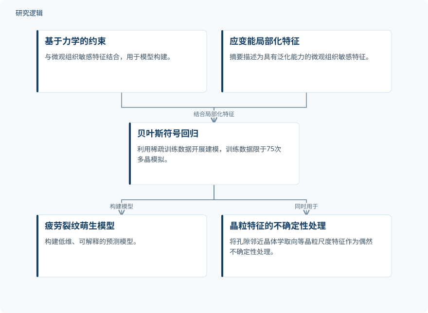

摘要解读
利用科学机器学习与稀疏训练数据构建微结构敏感疲劳裂纹萌生模型
Developing microstructure-sensitive fatigue crack initiation models with sparse training data using scientific machine learning
解读更新 2026-11-13 08:35 · 依据公开摘要整理，未核验全文细节
预测疲劳裂纹何时萌生，既要考虑微观组织，也要控制建模成本。这项研究将力学约束、应变能局部化特征与贝叶斯符号回归结合，探索用稀疏训练数据建立可解释模型的路径。
文章目录
微观组织预测为何难以走进工程实践
微观组织敏感建模已被用于预测疲劳裂纹萌生。摘要指出，高保真晶体塑性模型虽然提供了基础性认识，但计算资源和专业知识门槛限制了其向常规工程实践的转化。
机器学习代理模型可以提供另一条路径，但传统方法所需的训练数据量又可能超出实际承受范围。因此，本文关注的不只是预测精度，还包括能否以较低的数据与计算资源需求完成建模。
用力学约束与符号回归减少数据需求
研究将基于力学的约束与具有泛化能力的微观组织敏感应变能局部化特征结合，再利用贝叶斯符号回归（BSR），从稀疏训练数据中构建低维、可解释的疲劳裂纹萌生模型。训练数据被限制为75次多晶模拟。
BSR还用于将晶粒尺度特征作为偶然不确定性处理，例如裂纹萌生孔隙邻近晶粒的晶体学取向。摘要描述的实际情景是：孔隙具体几何可由X射线断层成像或过程建模获得，而邻近晶体学取向以统计表征的形式已知；这并不等于摘要报告了上述获取手段的实测验证。
依据摘要整理的疲劳裂纹萌生建模关系


仅概括摘要明确描述的方法关系，不是论文原图，不表示未报告的实验配置或验证结果。
下载 SVG图示关系说明
实线表示相邻阶段的信息流，虚线表示跨阶段联系或反馈。
基于力学的约束 → 贝叶斯符号回归：结合力学约束；应变能局部化特征 → 贝叶斯符号回归：结合局部化特征；贝叶斯符号回归 → 疲劳裂纹萌生模型：构建模型；贝叶斯符号回归 → 晶粒特征的不确定性处理：同时用于
稀疏训练下报告了相对既有文献的精度改善
摘要报告，与既有文献相比，该方法能够在稀疏训练数据条件下提高准确性。作者据此认为，这条路径具备向常规工程实践转化的实用性，但摘要未给出具体误差指标、改善幅度或计算耗时，不能据此量化其优势。
精度优势与适用范围仍需正文核对
本次解读仅依据所提供的完整摘要。75次多晶模拟说明了训练数据规模，却不足以判断材料体系、载荷条件、孔隙分布、数据划分，以及独立测试样本的构成；这些信息在摘要中未报告。
比较所涉及的具体文献模型、评价指标，以及是否包含实验验证、跨微观组织或跨工况验证，也无法由摘要确认。因此，不能将作者提出的工程转化潜力，直接理解为已经完成广泛工程应用验证。
阅读启发：关注物理信息如何替代数据堆积
阅读启发：对结构疲劳与可靠性建模而言，值得继续阅读的是，力学约束和应变能局部化特征分别提供了什么信息，以及符号回归如何将这些信息组织成可解释表达式。
建议进一步核对晶体学取向的统计表征如何进入预测，以及相关不确定性如何影响结果。这有助于判断模型在微观信息不完整时的适用边界，但不能据此推断其已实现可靠性评估或预测维护效果。
以上为本站阅读启发与建议，不是论文已验证的结论。